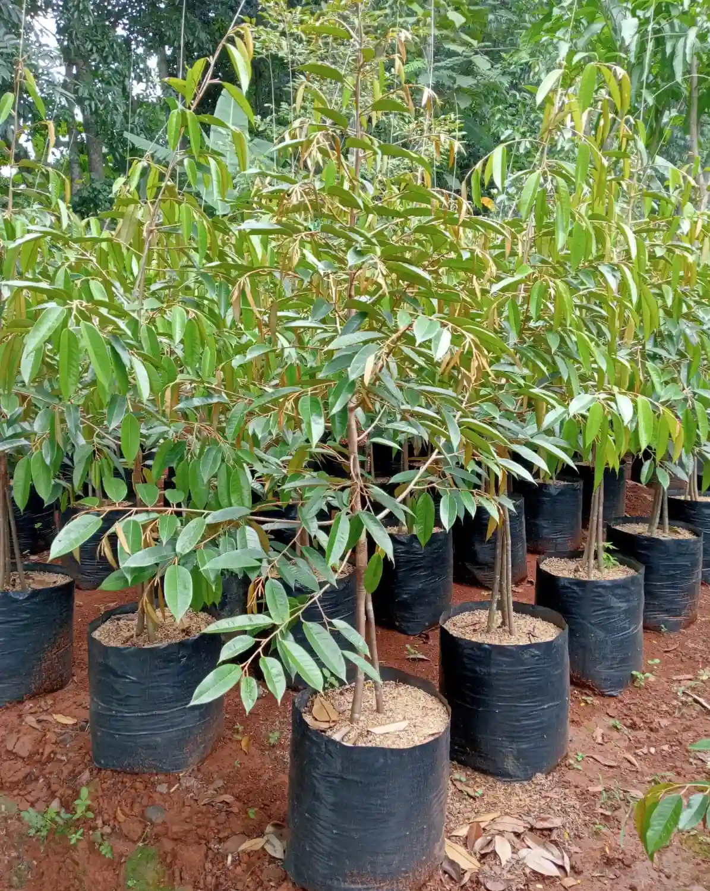
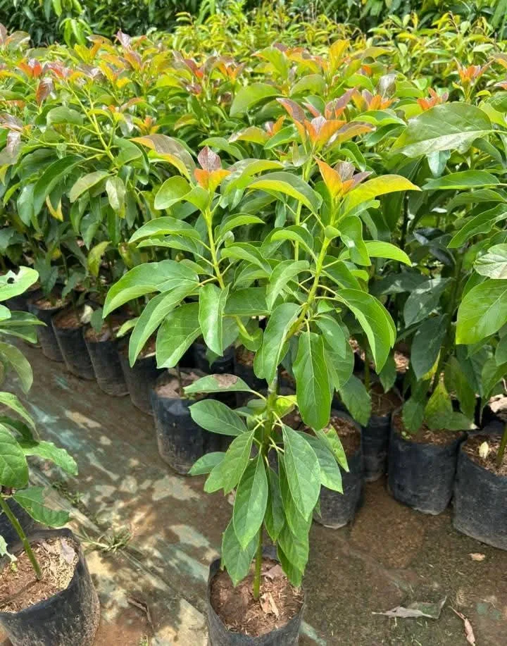
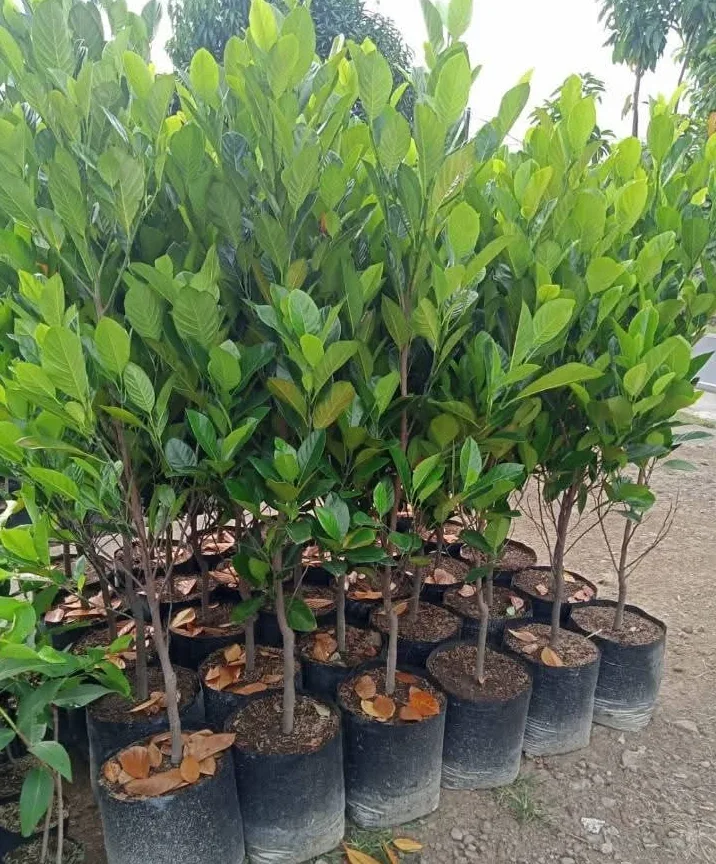
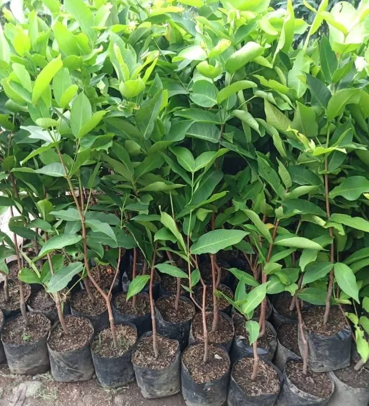
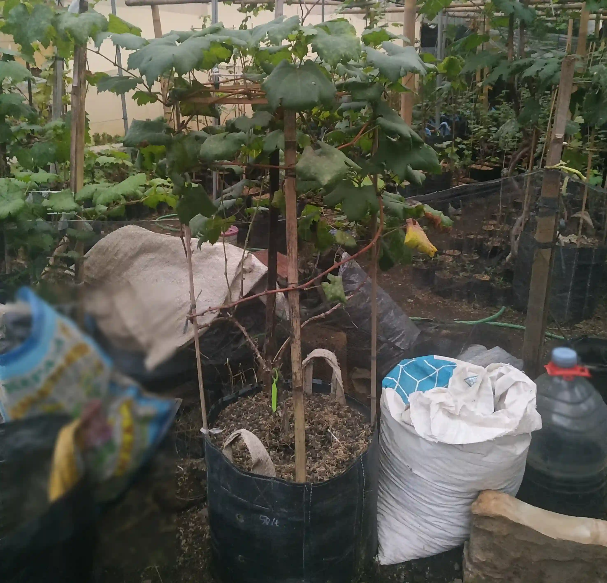
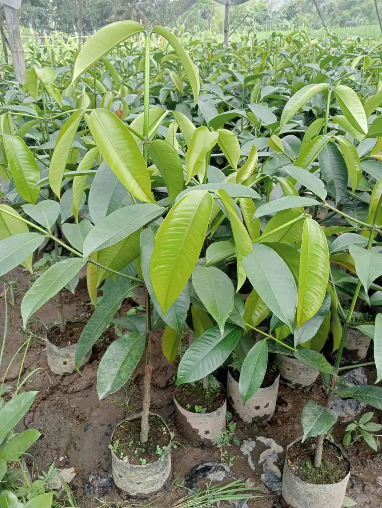
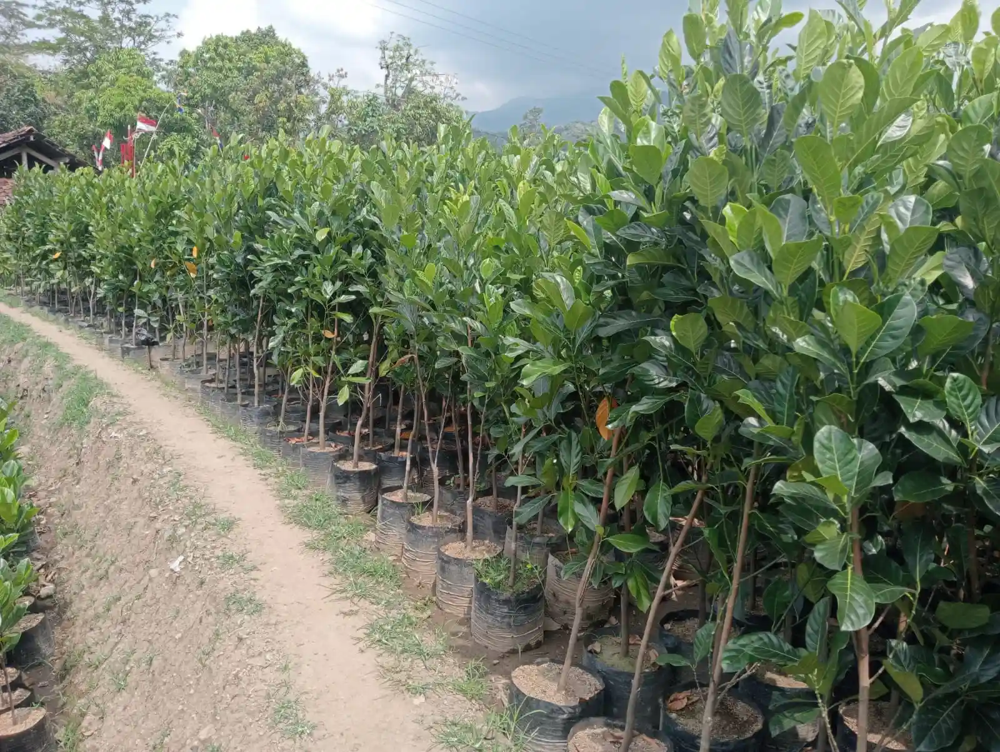
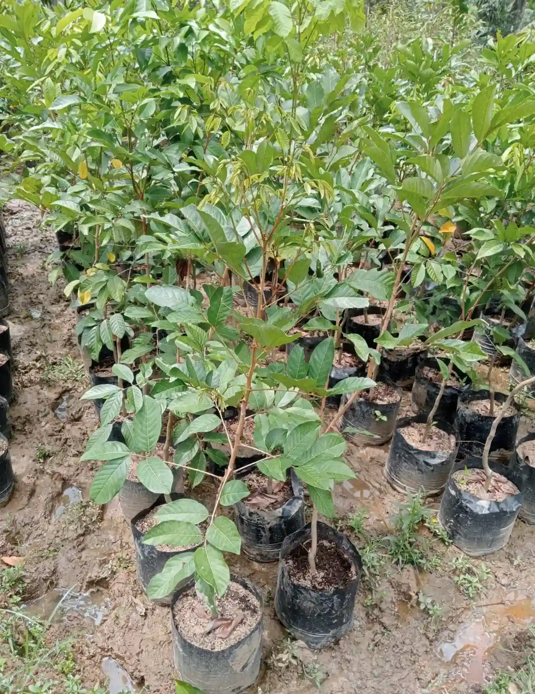
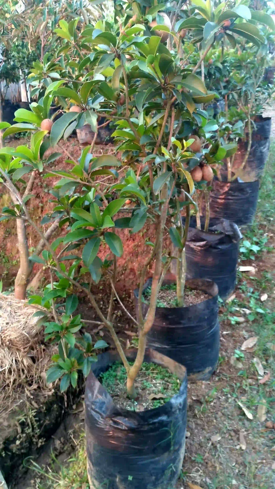
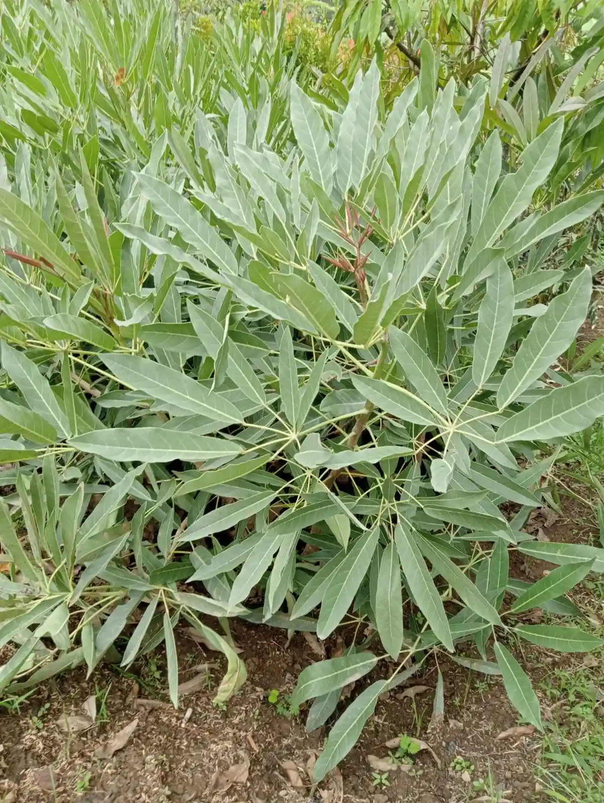

01. Durian
Varietas tersedia : Bawor, Musangking, Super tembaga, Black Thorn/duri hitam, Monthong, dll, Stok dan varietas bibit bervariasi sesuai kebutuhan dari 30 cm s/d 2 meter Up.

02. Alpukat
Varietas Miki,Mentega,Kendil,Aligator,dll. Hasil okulasi grafting, percabangan rindang dan kuat.

03. Nangka
Varietas tersedia : Nangka mini orange, kandel, nangkadak, cempedak, Bibit unggul varietas terjamin.

04. Jeruk
Varietas : Santang, Siam, nipis, Lemon california, dll. Kondisi rindang, sebagian sudah mulai belajar berbuah.

05. Jambu Citra
Cepat berbuah dan rindang, siap untuk budidaya tabulampot dan halaman rumah.

06. Anggur impor
Varietas tersedia : Jupiter, Ninel, Isabel, Anggur Brazil-Anggur pohon dll.

07. Manggis
Rasa Manis, perakaran kuat sehat.

08. Nangka Madu
Pertumbuhan batang cepat besar, tahan penyakit layu.

09. Rambutan Binjai
Bibit berkualitas tinggi, cepat berbuah.

10. Sawo Manila
Batang kokoh, toleran terhadap cuaca panas ekstrim.

11. Tabebuya
Cocok untuk halaman, taman, dan pohon peneduh.

12. Sukun
Kesiapan stok partai besar untuk reboisasi & investasi lahan.